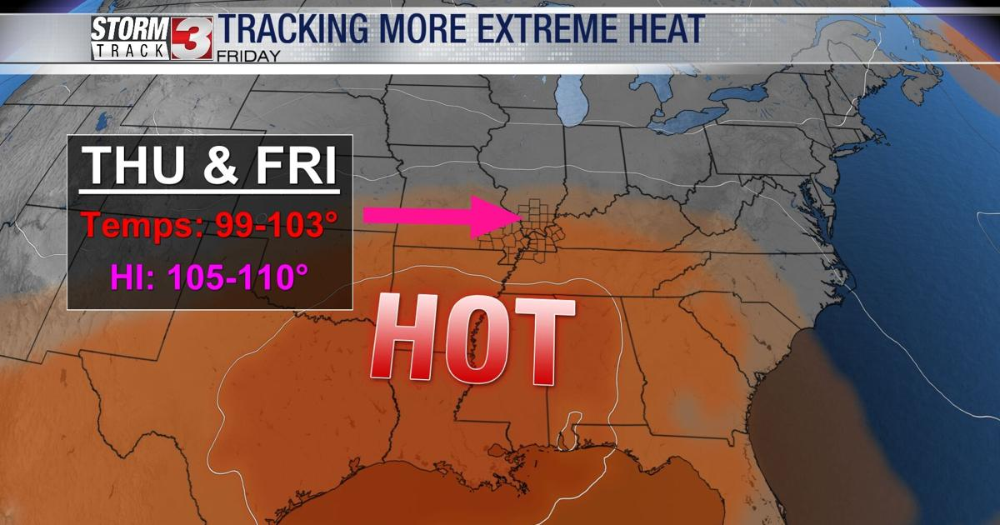

Slightly Cooler Monday, But 100º + Extreme Heat Later This Week

It was early in the morning when Maria, a mother of two, woke up to get herself and her kids ready for school and work. She looked outside the window and saw the sun shining brightly, making the day look beautiful. However, as she stepped outside, she felt the heat hit her like a ton of bricks. The temperature was already high, and the weatherman had said that it would get even worse later this week.
How Extreme Heat Can Affect Our Lives
During extreme heat waves, the temperature can reach dangerously high levels, making it difficult for people to perform their daily activities. Here are some examples of how extreme heat can affect our lives:
- It can cause dehydration, which can lead to a headache, dizziness, and fainting.
- It can exacerbate pre-existing medical conditions such as asthma, heart disease, and diabetes.
- It can increase the risk of heat-related illnesses such as heatstroke, which can be deadly.
- It can also affect the economy by reducing productivity, increasing healthcare costs, and causing power outages due to the strain on the power grid.
Ways to Stay Cool During Extreme Heat
Although extreme heat can be dangerous, there are ways to stay cool and avoid heat-related illnesses. Here are some tips:
- Stay hydrated by drinking plenty of water and avoiding alcohol, caffeine, and sugary drinks that can dehydrate you.
- Wear loose, light-colored clothing made of breathable fabrics like cotton.
- Stay indoors in air-conditioned places such as shopping malls, libraries, or community centers.
- If you don't have air conditioning at home, take frequent cold showers, use fans, or visit air-conditioned places.
- Avoid strenuous outdoor activities during the hottest part of the day, usually from 11 a.m. to 4 p.m. Instead, exercise in air-conditioned gyms or early in the morning or late in the evening.
Conclusion
In conclusion, extreme heat can cause many health problems and affect our daily lives. However, by taking proper precautions and staying cool, we can avoid heat-related illnesses and still enjoy the summer season. Remember to stay hydrated, wear light clothes, and seek air-conditioned places if you feel too hot. Stay safe and cool!
Remember to stay safe and cool during extreme heat. Here are some key takeaways from this article:
- Extreme heat can cause dehydration, exacerbate pre-existing medical conditions, and increase the risk of heat-related illnesses.
- To stay cool, drink plenty of water, wear loose, light-colored clothing, and stay indoors in air-conditioned places.
- Avoid strenuous outdoor activities during the hottest part of the day and exercise in air-conditioned gyms or early in the morning or late in the evening.
References:
Hashtags:
#heatwave #extremeheat #staycool #heatstroke #summerheat #climatechange
Article Category:
Weather and Health
Curated by Team Akash.Mittal.Blog


Curated by Team Akash.Mittal.Blog
Share on Twitter Share on LinkedIn